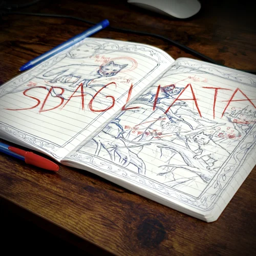
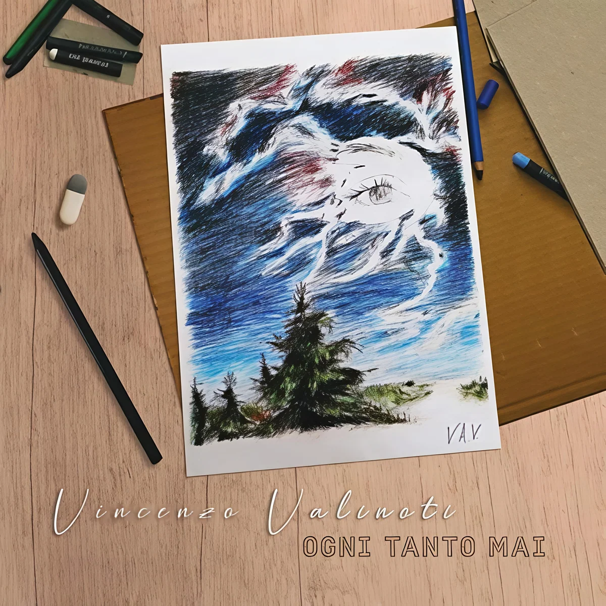
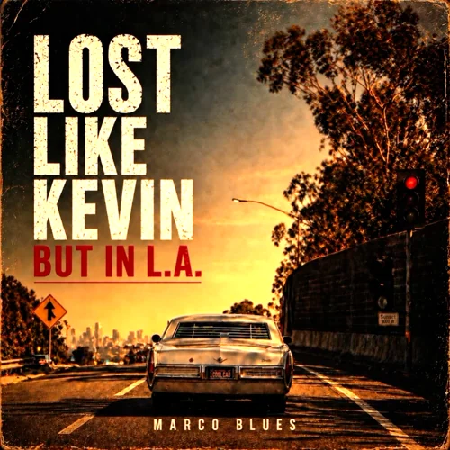

01 — Ascolto
La mia
musica.
Discografia e collaborazioni
01 - Discografia personale
I miei brani
Ultimi singoli
Brani più recenti. Interamente autoprodotti.
Ogni tanto mai
Progetto discografico del 2021. Brani scritti e composti da me, sotto etichetta SanLucaSound.

02 - Altri progetti
Collaborazioni con altri artisti
Cellamarte
Marco Blues

Brani non pubblicati
Larossi
Tra il 2025 e il 2026 le ho fatto da chitarrista e tastierista nei live.
Sativa
Larossi00:00 / 03:15
Ci sta
Larossi00:00 / 02:38
Laura Paterni
Narcotic Sin
Laura Paterni00:00 / 02:27
Progetto conclusivo del corso produttori al CET, 2024.
03 - Altro
Altre produzioni.
Brano proposto allo Zecchino d'Oro.
Tartaruga punk
Vincenzo Valinoti00:00 / 02:32
Progetto conclusivo del corso compositori CET 2026. Realizzato in finto inglese.
Find a light
Vincenzo Valinoti00:00 / 01:19
Riarrangiamenti realizzati per il corso produttori CET 2024.
Rolling in the deep
Adele00:00 / 03:15
Every breath you take
Sting00:00 / 02:41
Ed Sheeran — riarrangiamento
Ed Sheeran00:00 / 04:33
Mashup tra “Billie Jean” e “Con il nastro rosa”.
Billie Jean / Con il nastro rosa
battisti00:00 / 01:10